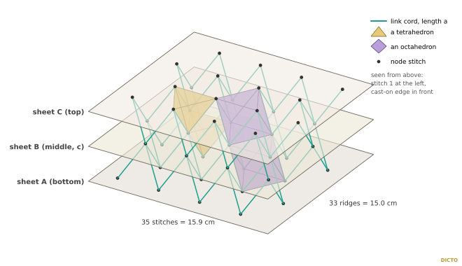
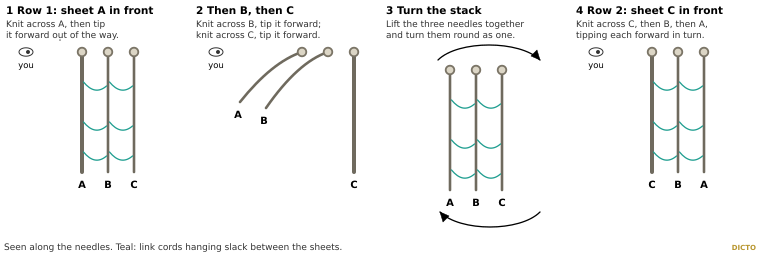
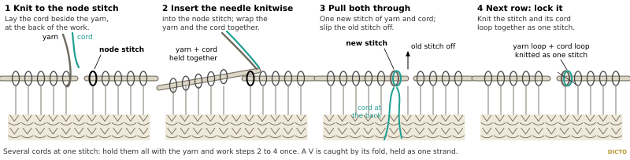
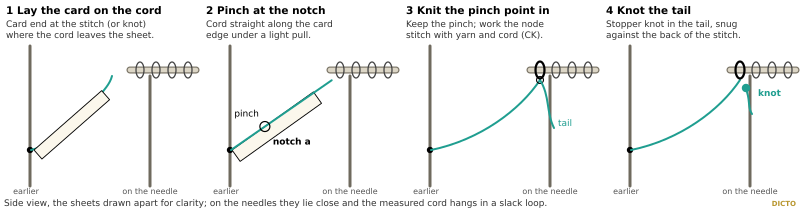
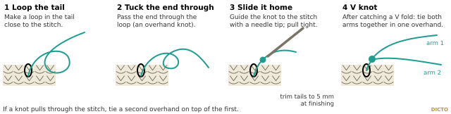
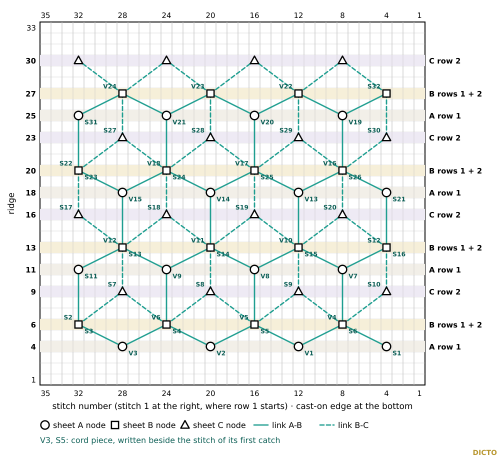
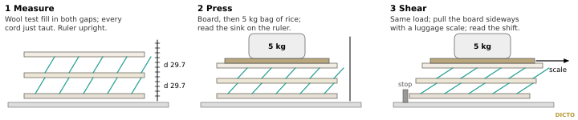

One small three-sheet patch, A-B-C, knitted in step with its link cords knitted in: the trial piece c of the cushion plan
DICTO proposed the Knitted HexOct (#83): knitted sheets as close-packed layers, each node joined to 3 nodes of the next sheet by a link of length
a at 54.74°, which holds the sheets √(2/3) a apart. After the cushion plan DICTO chose to start with one patch. This is the plan's
trial piece c: three garter sheets knitted at the same time on three needles, joined by 80 link cords that are knitted in at both ends, nothing sewn.
Every number below comes from scripts/pattern.py, on the plan's lattice (checks in patch/data/check.out).

| Size | 35 stitches × 33 ridges, 15.9 × 15.0 cm; with the gaps pushed apart about 6.3 cm deep |
|---|---|
| Sheets | A (bottom), B (middle, c), C (top); 4 × 4 nodes each; node spacing a = 36.4 mm (8 stitches), sheet spacing d = 29.7 mm |
| Links | 80 (40 between A and B, 40 between B and C), made from 56 cord pieces (24 V pieces, 32 singles) with 136 catches |
| Skill | experienced knitter: garter stitch, long-tail cast-on, bind-off; new here: three needles in step and the cord catches (§3) |
| Time | about 7 hours (plan rates: 25 stitches a minute plus a quarter for working in step; 30 s per catch and per piece) |
| Item | Amount |
|---|---|
| DK mercerised cotton, 100 m / 50 g | 69 m in all, about 23 m per sheet: one ball wound into three, or three colours (easier to tell the sheets apart) |
| Link cord, 1 mm waxed polyester (non-stretch) | 6.2 m: 24 pieces of 14 cm and 32 of 9 cm; buy 8 m |
| Three 3.5 mm circular needles, 40–60 cm | one per sheet |
| Card gauge (§3.3), thin card, glue | 1 |
| Locking stitch markers; scissors; tapestry needle; a bag or bowl for each ball | 3 markers |
| For the checks: carded wool (test fill), a board 14 × 14 cm, a 5 kg bag of rice, a luggage scale, a ruler, a non-slip mat | wool about 60–75 g |
Garter stitch on 3.5 mm needles: 22 stitches and 22 ridges to 10 cm (one ridge = two rows). Cast on 30 stitches, knit 30 ridges, lay the swatch flat without stretching and count over 10 cm. More stitches than 22: change to a larger needle; fewer: a smaller one. The stitch gauge must match, because the card sets the link length: 8 stitches must span the card's length a = 36.4 mm. For the ridges, 22 gives a node-row spacing +1.0 % from the ideal, 23 gives -3.4 %, 21 gives +5.8 %; write your count in the results table (§6).
| st | stitch; stitch numbers are fixed on the sheet, st 1 at the marked edge |
| CK | knit the stitch with the yarn and the cord(s) held together (§3.2) |
| V3, S5 | cord pieces: a V piece (caught by its fold, two arms) or a single (two ends), numbered in the order they start |
| at card | caught at the card length a from its earlier catch (§3.3) |
| r 9/2 | ridge 9, row 2 |
The chart (Figure 8) shows the three sheets on one grid, as you hold the work for row 1: one square is one stitch by one ridge, st 1 at the right, the cast-on edge at the bottom; circles, squares and triangles are the node stitches of A, B and C; teal lines join the two ends of each link. The ridge table (§4) says what to do on every ridge, row by row, sheet by sheet; a ridge listed as "knit" is plain knitting. The link table (§5) lists every cord piece with a box for each catch.


The first catch of a piece (the fold of a V, or the first end of a single with a 2.5 cm tail at the back) needs no measuring. Every later catch is made at the card length, so that every link is exactly a long between its two stitches: equal lengths matter more than anything else in this pattern.

Figure 6. The card gauge, true size (90 × 22 mm). Check that the bar measures 50 mm, cut the card out on its outline and glue it to thin card. The violet mark d is for the measure check (§6).

Cast on 35 stitches on each of the three needles (long-tail), each with its own ball, and set up the stack (§3.1). Ridge 1 is the first two rows after the cast-on. Work 33 ridges as in the table, all three sheets in step; every catch is a CK (§3.2), every catch marked "at card" is measured (§3.3), and every catch is knotted (§3.4). When you reach a stitch that holds a cord loop from the row before, lock it (§3.2, step 4). Bind off after ridge 33, in the row-1 position: bind off A knitwise, loosely, then B, then C. Cut the yarns leaving 15 cm.

| Ridge | Row 1: A, then B, then C | Row 2: C, then B, then A |
|---|---|---|
| 1–3 | knit, all three sheets in step | |
| 4 | A st 4: S1 first end (new 9 cm cord); st 12: V1 fold (new 14 cm cord); st 20: V2 fold (new 14 cm cord); st 28: V3 fold (new 14 cm cord) | knit |
| 5 | knit, all three sheets in step | |
| 6 | B st 8: V4 fold (new 14 cm cord); st 16: V5 fold (new 14 cm cord); st 24: V6 fold (new 14 cm cord); st 32: S2 first end (new 9 cm cord) | B st 32 (4th of the row): S3 first end (new 9 cm cord) + V3 arm at card; st 24 (12th of the row): S4 first end (new 9 cm cord) + V2 arm at card + V3 arm at card; st 16 (20th of the row): S5 first end (new 9 cm cord) + V1 arm at card + V2 arm at card; st 8 (28th of the row): S6 first end (new 9 cm cord) + S1 end at card + V1 arm at card |
| 7–8 | knit, all three sheets in step | |
| 9 | knit | C st 28 (8th of the row): S7 first end (new 9 cm cord) + S2 end at card + V6 arm at card; st 20 (16th of the row): S8 first end (new 9 cm cord) + V5 arm at card + V6 arm at card; st 12 (24th of the row): S9 first end (new 9 cm cord) + V4 arm at card + V5 arm at card; st 4 (32nd of the row): S10 first end (new 9 cm cord) + V4 arm at card |
| 10 | knit, all three sheets in step | |
| 11 | A st 8: V7 fold (new 14 cm cord) + S6 end at card; st 16: V8 fold (new 14 cm cord) + S5 end at card; st 24: V9 fold (new 14 cm cord) + S4 end at card; st 32: S11 first end (new 9 cm cord) + S3 end at card | knit |
| 12 | knit, all three sheets in step | |
| 13 | B st 4: S12 first end (new 9 cm cord) + S10 end at card; st 12: V10 fold (new 14 cm cord) + S9 end at card; st 20: V11 fold (new 14 cm cord) + S8 end at card; st 28: V12 fold (new 14 cm cord) + S7 end at card | B st 28 (8th of the row): S13 first end (new 9 cm cord) + S11 end at card + V9 arm at card; st 20 (16th of the row): S14 first end (new 9 cm cord) + V8 arm at card + V9 arm at card; st 12 (24th of the row): S15 first end (new 9 cm cord) + V7 arm at card + V8 arm at card; st 4 (32nd of the row): S16 first end (new 9 cm cord) + V7 arm at card |
| 14–15 | knit, all three sheets in step | |
| 16 | knit | C st 32 (4th of the row): S17 first end (new 9 cm cord) + V12 arm at card; st 24 (12th of the row): S18 first end (new 9 cm cord) + V11 arm at card + V12 arm at card; st 16 (20th of the row): S19 first end (new 9 cm cord) + V10 arm at card + V11 arm at card; st 8 (28th of the row): S20 first end (new 9 cm cord) + S12 end at card + V10 arm at card |
| 17 | knit, all three sheets in step | |
| 18 | A st 4: S21 first end (new 9 cm cord) + S16 end at card; st 12: V13 fold (new 14 cm cord) + S15 end at card; st 20: V14 fold (new 14 cm cord) + S14 end at card; st 28: V15 fold (new 14 cm cord) + S13 end at card | knit |
| 19 | knit, all three sheets in step | |
| 20 | B st 8: V16 fold (new 14 cm cord) + S20 end at card; st 16: V17 fold (new 14 cm cord) + S19 end at card; st 24: V18 fold (new 14 cm cord) + S18 end at card; st 32: S22 first end (new 9 cm cord) + S17 end at card | B st 32 (4th of the row): S23 first end (new 9 cm cord) + V15 arm at card; st 24 (12th of the row): S24 first end (new 9 cm cord) + V14 arm at card + V15 arm at card; st 16 (20th of the row): S25 first end (new 9 cm cord) + V13 arm at card + V14 arm at card; st 8 (28th of the row): S26 first end (new 9 cm cord) + S21 end at card + V13 arm at card |
| 21–22 | knit, all three sheets in step | |
| 23 | knit | C st 28 (8th of the row): S27 first end (new 9 cm cord) + S22 end at card + V18 arm at card; st 20 (16th of the row): S28 first end (new 9 cm cord) + V17 arm at card + V18 arm at card; st 12 (24th of the row): S29 first end (new 9 cm cord) + V16 arm at card + V17 arm at card; st 4 (32nd of the row): S30 first end (new 9 cm cord) + V16 arm at card |
| 24 | knit, all three sheets in step | |
| 25 | A st 8: V19 fold (new 14 cm cord) + S26 end at card; st 16: V20 fold (new 14 cm cord) + S25 end at card; st 24: V21 fold (new 14 cm cord) + S24 end at card; st 32: S31 first end (new 9 cm cord) + S23 end at card | knit |
| 26 | knit, all three sheets in step | |
| 27 | B st 4: S32 first end (new 9 cm cord) + S30 end at card; st 12: V22 fold (new 14 cm cord) + S29 end at card; st 20: V23 fold (new 14 cm cord) + S28 end at card; st 28: V24 fold (new 14 cm cord) + S27 end at card | B st 28 (8th of the row): S31 end at card + V21 arm at card; st 20 (16th of the row): V20 arm at card + V21 arm at card; st 12 (24th of the row): V19 arm at card + V20 arm at card; st 4 (32nd of the row): V19 arm at card |
| 28–29 | knit, all three sheets in step | |
| 30 | knit | C st 32 (4th of the row): V24 arm at card; st 24 (12th of the row): V23 arm at card + V24 arm at card; st 16 (20th of the row): V22 arm at card + V23 arm at card; st 8 (28th of the row): S32 end at card + V22 arm at card |
| 31–33 | knit, all three sheets in step | |
At most 3 cords meet in one stitch on one row (see §3.2 for several cords at one stitch).
Tick each box as the catch is made and knotted. "B st 8, r 6/2" = sheet B, stitch 8, ridge 6, row 2. A V piece has two far catches, one for each arm; take the arm on the side of that stitch.
| piece | gap | cm | first catch | far catch at card |
|---|---|---|---|---|
| S1 | 1 | 9 | A st 4, r 4/1 | B st 8, r 6/2 |
| V1 | 1 | 14 | A st 12, r 4/1 | B st 16, r 6/2 B st 8, r 6/2 |
| V2 | 1 | 14 | A st 20, r 4/1 | B st 24, r 6/2 B st 16, r 6/2 |
| V3 | 1 | 14 | A st 28, r 4/1 | B st 32, r 6/2 B st 24, r 6/2 |
| V4 | 2 | 14 | B st 8, r 6/1 | C st 12, r 9/2 C st 4, r 9/2 |
| V5 | 2 | 14 | B st 16, r 6/1 | C st 20, r 9/2 C st 12, r 9/2 |
| V6 | 2 | 14 | B st 24, r 6/1 | C st 28, r 9/2 C st 20, r 9/2 |
| S2 | 2 | 9 | B st 32, r 6/1 | C st 28, r 9/2 |
| S3 | 1 | 9 | B st 32, r 6/2 | A st 32, r 11/1 |
| S4 | 1 | 9 | B st 24, r 6/2 | A st 24, r 11/1 |
| S5 | 1 | 9 | B st 16, r 6/2 | A st 16, r 11/1 |
| S6 | 1 | 9 | B st 8, r 6/2 | A st 8, r 11/1 |
| S7 | 2 | 9 | C st 28, r 9/2 | B st 28, r 13/1 |
| S8 | 2 | 9 | C st 20, r 9/2 | B st 20, r 13/1 |
| S9 | 2 | 9 | C st 12, r 9/2 | B st 12, r 13/1 |
| S10 | 2 | 9 | C st 4, r 9/2 | B st 4, r 13/1 |
| V7 | 1 | 14 | A st 8, r 11/1 | B st 12, r 13/2 B st 4, r 13/2 |
| V8 | 1 | 14 | A st 16, r 11/1 | B st 20, r 13/2 B st 12, r 13/2 |
| V9 | 1 | 14 | A st 24, r 11/1 | B st 28, r 13/2 B st 20, r 13/2 |
| S11 | 1 | 9 | A st 32, r 11/1 | B st 28, r 13/2 |
| S12 | 2 | 9 | B st 4, r 13/1 | C st 8, r 16/2 |
| V10 | 2 | 14 | B st 12, r 13/1 | C st 16, r 16/2 C st 8, r 16/2 |
| V11 | 2 | 14 | B st 20, r 13/1 | C st 24, r 16/2 C st 16, r 16/2 |
| V12 | 2 | 14 | B st 28, r 13/1 | C st 32, r 16/2 C st 24, r 16/2 |
| S13 | 1 | 9 | B st 28, r 13/2 | A st 28, r 18/1 |
| S14 | 1 | 9 | B st 20, r 13/2 | A st 20, r 18/1 |
| S15 | 1 | 9 | B st 12, r 13/2 | A st 12, r 18/1 |
| S16 | 1 | 9 | B st 4, r 13/2 | A st 4, r 18/1 |
| piece | gap | cm | first catch | far catch at card |
|---|---|---|---|---|
| S17 | 2 | 9 | C st 32, r 16/2 | B st 32, r 20/1 |
| S18 | 2 | 9 | C st 24, r 16/2 | B st 24, r 20/1 |
| S19 | 2 | 9 | C st 16, r 16/2 | B st 16, r 20/1 |
| S20 | 2 | 9 | C st 8, r 16/2 | B st 8, r 20/1 |
| S21 | 1 | 9 | A st 4, r 18/1 | B st 8, r 20/2 |
| V13 | 1 | 14 | A st 12, r 18/1 | B st 16, r 20/2 B st 8, r 20/2 |
| V14 | 1 | 14 | A st 20, r 18/1 | B st 24, r 20/2 B st 16, r 20/2 |
| V15 | 1 | 14 | A st 28, r 18/1 | B st 32, r 20/2 B st 24, r 20/2 |
| V16 | 2 | 14 | B st 8, r 20/1 | C st 12, r 23/2 C st 4, r 23/2 |
| V17 | 2 | 14 | B st 16, r 20/1 | C st 20, r 23/2 C st 12, r 23/2 |
| V18 | 2 | 14 | B st 24, r 20/1 | C st 28, r 23/2 C st 20, r 23/2 |
| S22 | 2 | 9 | B st 32, r 20/1 | C st 28, r 23/2 |
| S23 | 1 | 9 | B st 32, r 20/2 | A st 32, r 25/1 |
| S24 | 1 | 9 | B st 24, r 20/2 | A st 24, r 25/1 |
| S25 | 1 | 9 | B st 16, r 20/2 | A st 16, r 25/1 |
| S26 | 1 | 9 | B st 8, r 20/2 | A st 8, r 25/1 |
| S27 | 2 | 9 | C st 28, r 23/2 | B st 28, r 27/1 |
| S28 | 2 | 9 | C st 20, r 23/2 | B st 20, r 27/1 |
| S29 | 2 | 9 | C st 12, r 23/2 | B st 12, r 27/1 |
| S30 | 2 | 9 | C st 4, r 23/2 | B st 4, r 27/1 |
| V19 | 1 | 14 | A st 8, r 25/1 | B st 12, r 27/2 B st 4, r 27/2 |
| V20 | 1 | 14 | A st 16, r 25/1 | B st 20, r 27/2 B st 12, r 27/2 |
| V21 | 1 | 14 | A st 24, r 25/1 | B st 28, r 27/2 B st 20, r 27/2 |
| S31 | 1 | 9 | A st 32, r 25/1 | B st 28, r 27/2 |
| S32 | 2 | 9 | B st 4, r 27/1 | C st 8, r 30/2 |
| V22 | 2 | 14 | B st 12, r 27/1 | C st 16, r 30/2 C st 8, r 30/2 |
| V23 | 2 | 14 | B st 20, r 27/1 | C st 24, r 30/2 C st 16, r 30/2 |
| V24 | 2 | 14 | B st 28, r 27/1 | C st 32, r 30/2 C st 24, r 30/2 |

| Check | Expected (#83 geometry) | c patch (this pattern) | h patch (later, §7) |
|---|---|---|---|
| Gauge: stitches / ridges per 10 cm | 22 / 22 | ||
| 4 nodes along a row, outer to outer (3 spacings), sheets A and C | 109.1 mm | ||
| 4 node rows, first to last (3 row spacings) | 94.5 mm ideal (95.5 mm knitted) | ||
| Sheet spacing A-B and B-C, middle to middle | 29.7 mm (card mark d) | ||
| Whole patch, deep | about 6.3 cm | ||
| Cords straight on through B (look along the rows) | yes, 32 pairs | ||
| Press: height with board only / with 5 kg / 1 min after | not known | ||
| Shear: shift at 0.5 / 1.0 / 1.5 / 2.0 kg | not known | ||
| Notes (feel, slipped knots, cords too long or short) |
The h version differs only in sheet 3's offsets: its nodes sit over sheet A's, on the ridges and stitches below. Its links follow the same rules (each node to the three nearest nodes of the next sheet; the node met first takes the fold of a V or the first end of a single; up on row 1, down on row 2): 80 links from 56 cord pieces, and no link pair runs straight on through B.
| h: sheet 3 node ridge | stitches | c: sheet C node ridge | stitches |
|---|---|---|---|
| 4 | 4, 12, 20, 28 | 9 | 4, 12, 20, 28 |
| 11 | 8, 16, 24, 32 | 16 | 8, 16, 24, 32 |
| 18 | 4, 12, 20, 28 | 23 | 4, 12, 20, 28 |
| 25 | 8, 16, 24, 32 | 30 | 8, 16, 24, 32 |
Sources. #83 HexOct: Knitting Crystals, v4, DICTO DOI: 10.5281/zenodo.23848271; the approved cushion plan (study 2026-11-03-hexoct-cushion-plan, scripts/plan.py, commit fc3f3f21), whose lattice, offsets, rounding, cord and catch rules this patch uses. Hand techniques (long-tail cast-on, bind-off, overhand knot) are standard; no source checked.